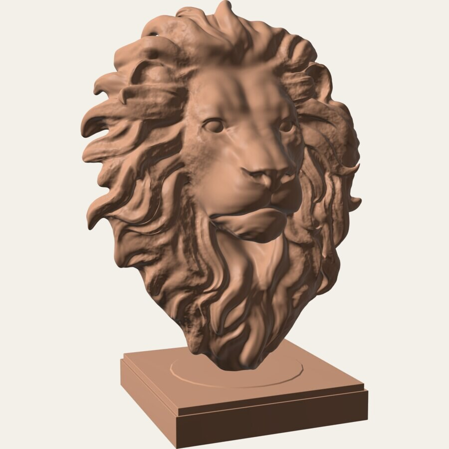
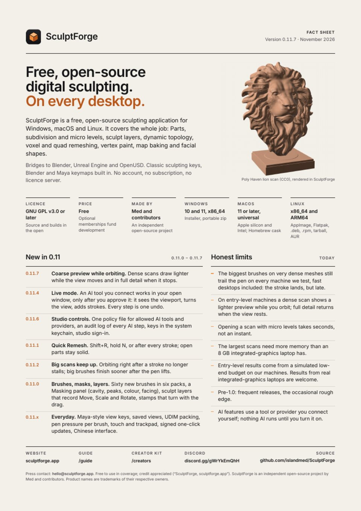

Version 0.11.7 · November 2026
Everything you need to show SculptForge.
Real-speed footage, stills, a test scene you can run yourself, the facts and the logo. Free to use in your review or video. Credit is appreciated, never required.
Version 0.11.7 · November 2026
Real-speed footage, stills, a test scene you can run yourself, the facts and the logo. Free to use in your review or video. Credit is appreciated, never required.

Recorded in SculptForge with its own capture, no window in the way. Real speed unless the clip's name says otherwise. Clean interface, no overlays, ready to cut.
Ten renders of real sculpts in the clay and Lit Sphere looks, and ten interface shots, all 4K with the same framing and grade. Click any image for the full file.
Two runs on your own machine: a built-in head that needs no download, and the lion scan from the kit. Open, start, read the table.
Everything here runs inside SculptForge 0.11.7 or later. It measures how the app responds on your machine, so your numbers can sit next to ours. We quote the slowest frame (worst stall), not average frames per second: a single long hitch is what you feel under the pen.
lion-28m.sfproj: a scanned lion head, subdivided to 28.0 million triangles, with generated surface noise (not sculpted). Lion head model by Poly Haven (CC0).
sculptforge --benchmark-file lion-28m.sfprojClay strokes at 25, 120 and 240 px, then a 10 s orbit. The results table and the JSON are the same as in Run A.
Medians of three runs on 0.11.7 with the video on (the defaults above), each started at an idle machine. Machines are named exactly; the laptop is an Apple M1 Pro running Asahi Linux, not macOS. Measured by the SculptForge team; method: sculptforge.app/fast/ and docs/benchmark.md.
Your numbers will differ with the GPU driver, other apps, power mode and screen size. If yours are far off ours on similar hardware, we would like to see the JSON: Help > Benchmark > How to share results.
What it is, what changed in 0.11, what is still slow, and where to link. One page, in print and in plain text for your description box.

The orange cube on its dark tile is the logo and the app icon. Use the files as supplied; the usage sheet shows clear space and the few things to avoid.
Use anything here in reviews, videos, streams, articles and thumbnails about SculptForge. No need to ask. If you credit us: SculptForge, sculptforge.app
SculptForge is an independent open-source project by Med and contributors. Product names are trademarks of their respective owners. This page uses no cookies; visits are counted anonymously with GoatCounter.